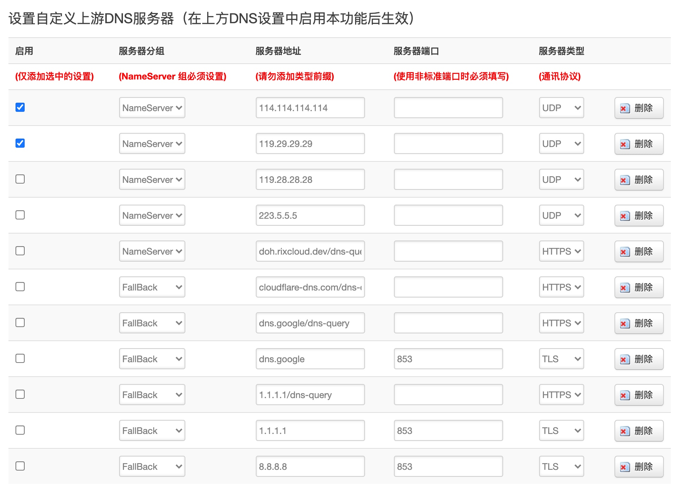
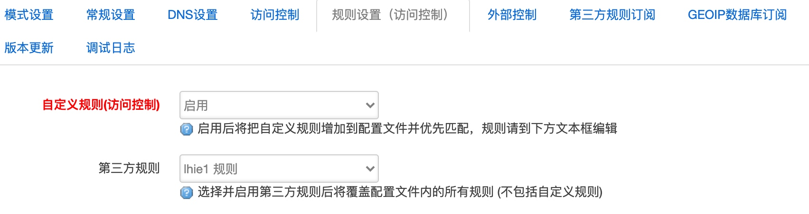
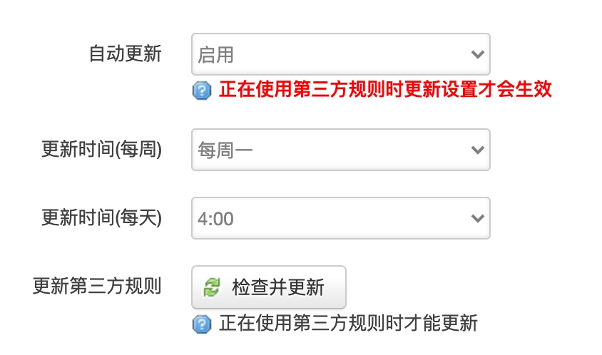
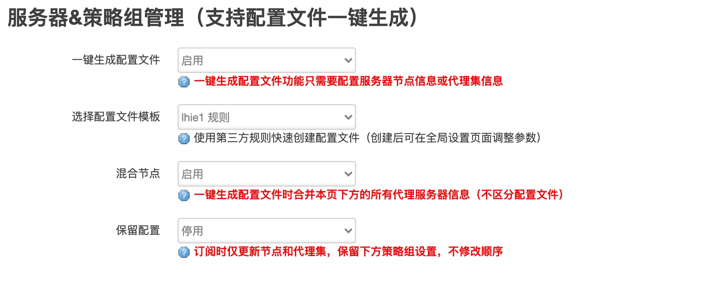
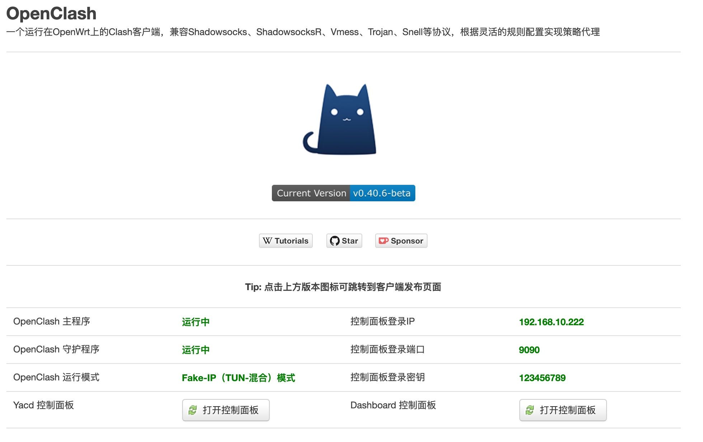

项目介绍
安装
安装环境
- 架构：MediaTek MT7621
- 固件版本：OpenWrt R20.8.27 / LuCI Master (git-20.223.26773-d18ef13)
- 内核版本：5.4.59
进入后台
通过终端行进入
ssh root@192.168.1.1
如果不能正常登录，请检查密码是否正确或者后台ssh登录是否开启
依赖安装
- 更新
opkg update
如更新错误，请检查系统-软件包-配置内地址是否可用
小娱路由器软件源（MT7621）
src/gz openwrt_core https://downloads.openwrt.org/snapshots/targets/ramips/mt7621/packages/
src/gz openwrt_base https://downloads.openwrt.org/snapshots/packages/mipsel_24kc/base/
src/gz openwrt_luci https://downloads.openwrt.org/snapshots/packages/mipsel_24kc/luci/
src/gz openwrt_packages https://downloads.openwrt.org/snapshots/packages/mipsel_24kc/packages
src/gz openwrt_routing https://downloads.openwrt.org/snapshots/packages/mipsel_24kc/routing
src/gz openwrt_telephony https://downloads.openwrt.org/snapshots/packages/mipsel_24kc/telephony
2.安装依赖
coreutils-nohup, bash, iptables, dnsmasq-full, curl, jsonfilter, ca-certificates, ipset, ip-full, iptables-mod-tproxy
按顺序安装以上依赖，每个依赖单独安装
无法安装 kmod-tun（显示内核版本不匹配）
强制安装
opkg install kmod-tun --force-depends
同样问题都可以使用以上方法解决
报错：opkg_conf_load: Could not lock /var/lock/opkg.lock: Resource temporarily unavailable.
rm -f /var/lock/opkg.lock
确认依赖安装成功后可进行后续的操作
主程序安装
- 进入tmp目录
cd /tmp/tmp/
- 下载及安装ipk（目前最新版本0.40.6）
wget https://github.com/vernesong/OpenClash/releases/download/v0.40.6-beta/luci-app-openclash_0.40.6-beta_all.ipk
opkg install luci-app-openclash_0.40.6-beta_all.ipk
注意软件名根据下载版本更改
内核下载
进入到内核目录（根据自己的硬件选择）
- clash内核
cd /etc/openclash/core/
wget https://github.com/vernesong/OpenClash/releases/download/Clash/clash-linux-mipsle-softfloat.tar.gz
tar -zxvf clash-linux-mipsle-softfloat.tar.gz
chmod 777 clash
其他内核方法一致
安装完毕
配置设置
模式设置
推荐Fake-IP模式
常规设置
- 内核编译版本：linux-mipsle-softfloat
### DNS设置 - 本地DNS：启用
- 自定义上游DNS服务器：启用
- 勾选以下DNS 
规则设置

第三方规则订阅

服务器与策略组

上传配置文件
自行研究
保存配置并应用
启动成功
